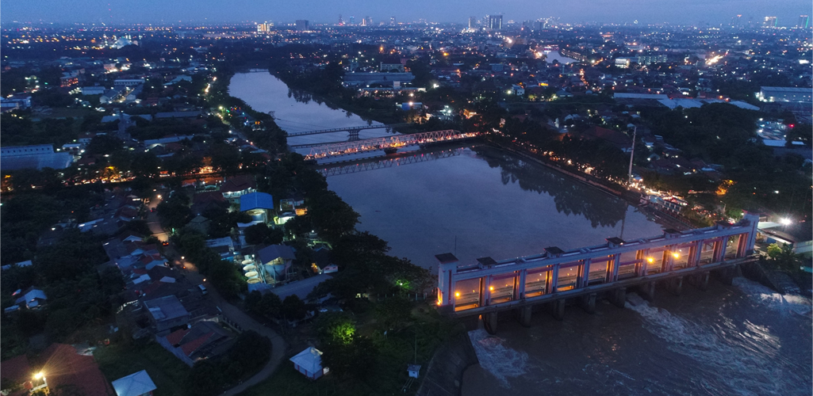
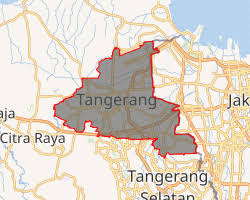
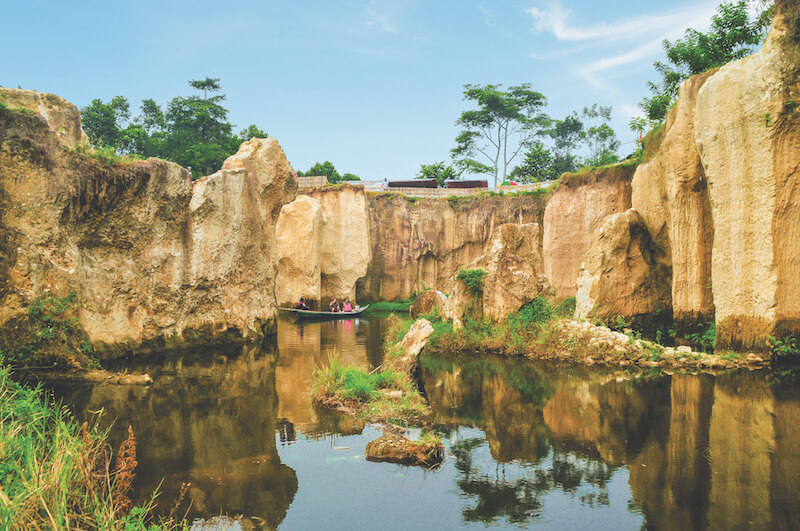
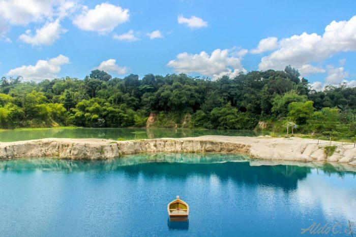

Sejarah

Sejarah mencatat lahirnya Tangerang bermula dari sebutan kepada sebuah bangunan tugu berbahan dasar bambu yang didirikan oleh Pangerang Soegiri, putra Sultan Ageng Tirtayasa dari Kesultanan Banten. Tugu tersebut terletak di bagian Barat Sungai Cisadane yang diyakini saat ini berada di wilayah kampung Gerendeng.
Geografis

Kota Tangerang terletak di wilayah barat laut Provinsi Banten dan berada di sisi utara Pulau Jawa. Secara astronomis, kota ini terletak 106°33' - 106°44' BT dan 6°05'–6°15 LS. Kota Tangerang mempunyai luas sebesar ±153,9 km².
Kota ini berbatasan dengan Kabupaten Tangerang di sebelah Barat dan Utara, dengan Kota Tangerang Selatan di sisi Selatan, dan dengan DKI Jakarta di sebelah Timur.
Wisata
Kota Tangerang memiliki beberapa tempat wisata
Tebing Koja

nama lokasi wisata alam terkemuka di area Tangerang, memang sangat artistik secara alamiah. Bebatuan tebing curam hasil pahatan alam berpadu harmonis dengan liukan sungai dan hijaunya sawah. Tempat wisata ini berlokasi di Desa Cikuya, Solear, Tangerang
Telaga Biru

Berjarak sekitar sembilan kilometer dari lokasi Tebing Koja, perjalanan wisata alam bisa diteruskan di danau cantik berair biru, Telaga Cisoka.
Danau ini asalnya bekas genangan penambangan pasir, bersamaan dengan area Tebing Koja. Namanya semakin tersohor sejak netizen mengunggah foto-foto panorama eloknya di media sosial. Tentunya, Anda tak boleh ketinggalan menikmati indahnya area ini!. wisata ini berada tepat di Jalan Cigaru-Cisoka, Tangerang